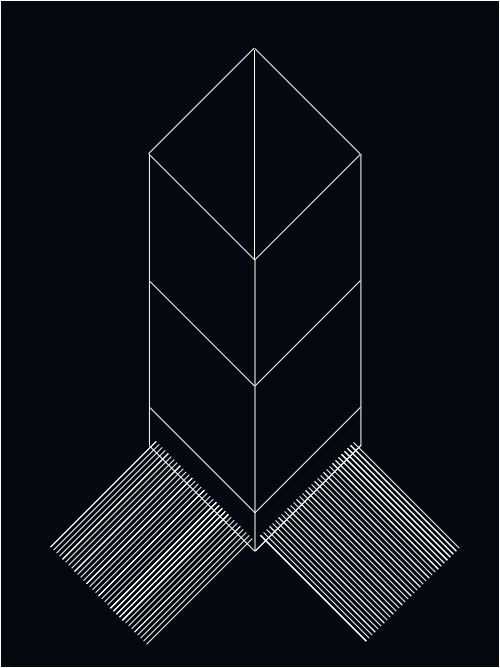
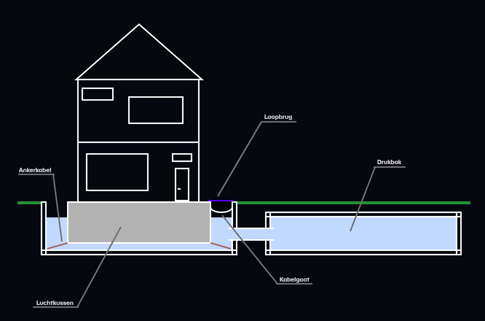

Sohrab Akhoundzadeh
Huis op kabels
Voordelen
Het concept van een huis op kabels kan enkele duurzame voordelen hebben. Zo kunnen er, afhankelijk van het type kabels, duurzame keuzes worden gemaakt voor het materiaal. Bij een goed ontworpen systeem maakt dit het mogelijk om touwen en katrollen te hergebruiken. Dat kan ten eerste afvalproductie voorkomen en bovendien de vraag naar nieuwe materialen verminderen.
Ook geldt er bij dit concept ook weer dat er aanpassingen kunnen worden gemaakt aan het huis, zonder structurele veranderingen in te brengen. Dit komt doordat er handige gewichtsafstellingen met een computersoftware gemaakt kunnen worden voor de touwen en/of katrollen. Ook biedt het concept wegens het handige gebruik van de touwen flexibiliteit en kunnen er voor de krachtverdeling berekeningen gemaakt worden. Dit kan wederom sloop voorkomen en dus een indirecte duurzame bijdrage hebben.
Het concept van een huis op kabels kan enkele duurzame voordelen hebben. Zo kunnen er, afhankelijk van het type kabels, duurzame keuzes worden gemaakt voor het materiaal. Bij een goed ontworpen systeem maakt dit het mogelijk om touwen en katrollen te hergebruiken. Dat kan ten eerste afvalproductie voorkomen en bovendien de vraag naar nieuwe materialen verminderen.
Ook geldt er bij dit concept ook weer dat er aanpassingen kunnen worden gemaakt aan het huis, zonder structurele veranderingen in te brengen. Dit komt doordat er handige gewichtsafstellingen met een computersoftware gemaakt kunnen worden voor de touwen en/of katrollen. Ook biedt het concept wegens het handige gebruik van de touwen flexibiliteit en kunnen er voor de krachtverdeling berekeningen gemaakt worden. Dit kan wederom sloop voorkomen en dus een indirecte duurzame bijdrage hebben.
Nadelen
Het is echter wel duidelijk dat op grote schaal het concept mega veel milieuschade oplevert. Ten eerste komt dat door het energieverbruik van digitaal apparatuur om constant berekeningen en aanpassingen te maken bij de evenwichtsverstoringen. Op lange duur zorgt dit voor een veel te groot energieverbruik wat de duurzaamheid van dit concept aanzienlijk aantast.
Daar komt nog bij dat het heel veel onderhoud kost. Wegens het gecompliceerde systeem van de constructie is er veel geavanceerd materiaal nodig om te zorgen voor een goed onderhoud. Dit maakt het onderhoud heel energie-intensief en op de lange termijn ook niet haalbaar. Dit kan de duurzaamheid dus ook nadelig beïnvloeden.
Ook is er een enorm grote hoeveelheid touw en gewichten nodig voor de installatie van het systeem. Wanneer meerdere huizen met dit systeem gemaakt worden, zou dat de vraag naar de benodigde materialen hiervoor enorm vergroten. Ook is het niet realistisch om met de aanwezige hoeveelheid materiaal voor touwen, gewichten, katrollen op de aarde genoeg huizen te voorzien van dit systeem.
Tenslotte maakt dit concept het computersysteem heel kwetsbaar voor storingen.
Het is echter wel duidelijk dat op grote schaal het concept mega veel milieuschade oplevert. Ten eerste komt dat door het energieverbruik van digitaal apparatuur om constant berekeningen en aanpassingen te maken bij de evenwichtsverstoringen. Op lange duur zorgt dit voor een veel te groot energieverbruik wat de duurzaamheid van dit concept aanzienlijk aantast.
Daar komt nog bij dat het heel veel onderhoud kost. Wegens het gecompliceerde systeem van de constructie is er veel geavanceerd materiaal nodig om te zorgen voor een goed onderhoud. Dit maakt het onderhoud heel energie-intensief en op de lange termijn ook niet haalbaar. Dit kan de duurzaamheid dus ook nadelig beïnvloeden.
Ook is er een enorm grote hoeveelheid touw en gewichten nodig voor de installatie van het systeem. Wanneer meerdere huizen met dit systeem gemaakt worden, zou dat de vraag naar de benodigde materialen hiervoor enorm vergroten. Ook is het niet realistisch om met de aanwezige hoeveelheid materiaal voor touwen, gewichten, katrollen op de aarde genoeg huizen te voorzien van dit systeem.
Tenslotte maakt dit concept het computersysteem heel kwetsbaar voor storingen.

Afbeelding 1
Huis op kabels
Huis op water
Voordelen
Vanuit een relatief standpunt bekeken, is het gebruik van water duurzamer dan de meerderheid van de bouwmaterialen die in de voorgaande oplossingen zijn genoemd. Ten eerste is water een hernieuwbaar vergeleken met sommige materialen die afkomstig zijn van eindige bronnen. Het winnen van water heeft daarnaast ook een veel lagere milieu-impact dan andere materiaal, zoals beton of staal. Er komen dus geen schadelijke stoffen of afval vrij die het milieu kunnen aantasten. Bovendien heeft water een energie-efficiënt karakter. In tegenstellig tot andere bouwmaterialen, is water een thermische stof. Dit houdt in dat water makkelijk warmte kan opslaan waardoor het dient als een soort thermostaat voor gebouwen. Dit kan het gasgebruik en dus de gasprijzen per gebouw aanzienlijk verlagen.
Ten tweede zorgt water voor een flexibele constructie. Dankzij de flexibiliteit zijn huizen op water beter bestand tegen zijwaartse krachten, die tijdens een aardbeving worden afgegeven. Dit minimaliseert structurele schade en dus het vrijkomen van afval. Dit maakt het huis dus ook aanzienlijk minder onderhoudsintensief.
Vanuit een relatief standpunt bekeken, is het gebruik van water duurzamer dan de meerderheid van de bouwmaterialen die in de voorgaande oplossingen zijn genoemd. Ten eerste is water een hernieuwbaar vergeleken met sommige materialen die afkomstig zijn van eindige bronnen. Het winnen van water heeft daarnaast ook een veel lagere milieu-impact dan andere materiaal, zoals beton of staal. Er komen dus geen schadelijke stoffen of afval vrij die het milieu kunnen aantasten. Bovendien heeft water een energie-efficiënt karakter. In tegenstellig tot andere bouwmaterialen, is water een thermische stof. Dit houdt in dat water makkelijk warmte kan opslaan waardoor het dient als een soort thermostaat voor gebouwen. Dit kan het gasgebruik en dus de gasprijzen per gebouw aanzienlijk verlagen.
Ten tweede zorgt water voor een flexibele constructie. Dankzij de flexibiliteit zijn huizen op water beter bestand tegen zijwaartse krachten, die tijdens een aardbeving worden afgegeven. Dit minimaliseert structurele schade en dus het vrijkomen van afval. Dit maakt het huis dus ook aanzienlijk minder onderhoudsintensief.
Nadelen
Het gebruik van water als fundering voor een huis heeft echter erg veel ruimte nodig. De hoeveelheid water die nodig is om een groot huis/gebouw te kunnen dragen gaat daarmee hand in hand. Hierdoor moeten er vaak grote stukken grond worden weggegraven om een “zwembadfundering” te maken die groot moet zijn. Zo mag er geen water uit de fundering stromen bij seismische activiteit en moet het huis vrij kunnen bewegen. Dit vereist veel en sterk materiaal wat erg milieubelastend is.
Het gebruik van water als fundering voor een huis heeft echter erg veel ruimte nodig. De hoeveelheid water die nodig is om een groot huis/gebouw te kunnen dragen gaat daarmee hand in hand. Hierdoor moeten er vaak grote stukken grond worden weggegraven om een “zwembadfundering” te maken die groot moet zijn. Zo mag er geen water uit de fundering stromen bij seismische activiteit en moet het huis vrij kunnen bewegen. Dit vereist veel en sterk materiaal wat erg milieubelastend is.
Duurzaam genoeg?
Vergeleken met de rest van onze oplossingen is een constructie van een huis met een waterfundering de meest duurzame oplossing. Dit is wel afhankelijk van de manier waarop en het materiaal waarmee de “zwembadfundering” gemaakt wordt. Ondanks dat de fundering best wat ruimte en duizenden liters water met zich mee kan brengen, kunnen duurzame keuzes in het bouwproces deze oplossing aanzienlijk verbeteren. Wegens de veelzijdigheid van water zou het in de toekomst dus best een handig alternatief zijn bij de innovatie van de aardbevingsbestendige architectuur.
Vergeleken met de rest van onze oplossingen is een constructie van een huis met een waterfundering de meest duurzame oplossing. Dit is wel afhankelijk van de manier waarop en het materiaal waarmee de “zwembadfundering” gemaakt wordt. Ondanks dat de fundering best wat ruimte en duizenden liters water met zich mee kan brengen, kunnen duurzame keuzes in het bouwproces deze oplossing aanzienlijk verbeteren. Wegens de veelzijdigheid van water zou het in de toekomst dus best een handig alternatief zijn bij de innovatie van de aardbevingsbestendige architectuur.

Afbeelding 2
Huis op water